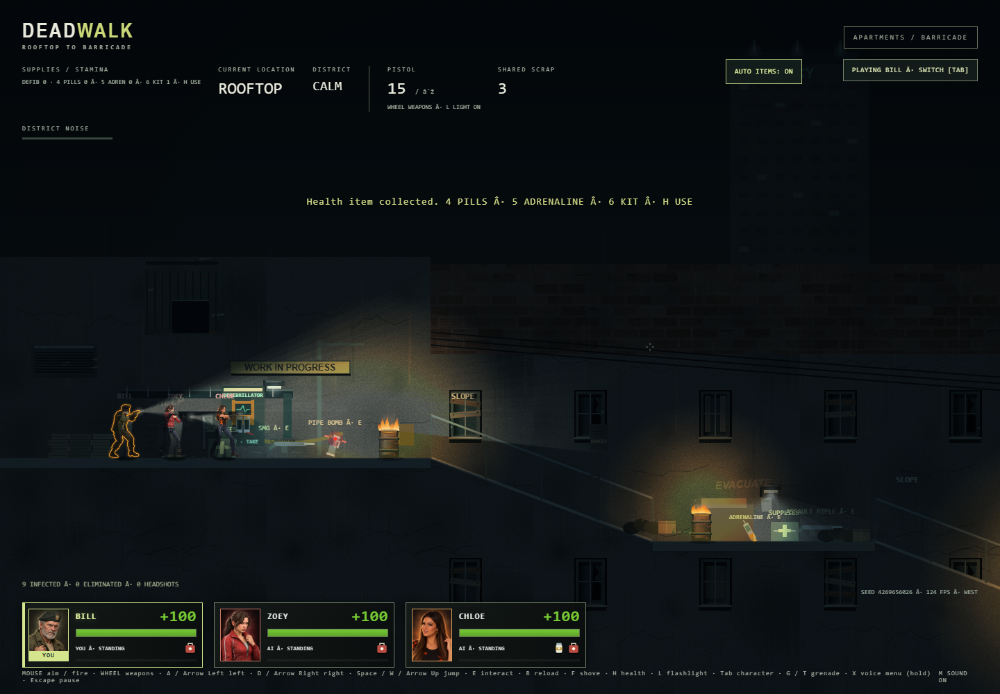
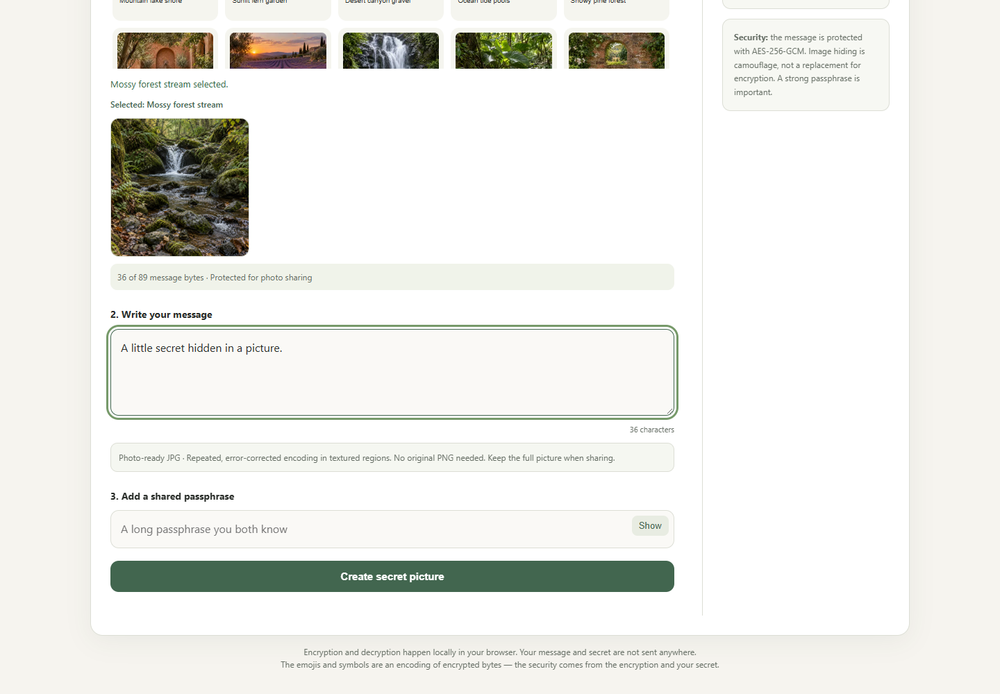
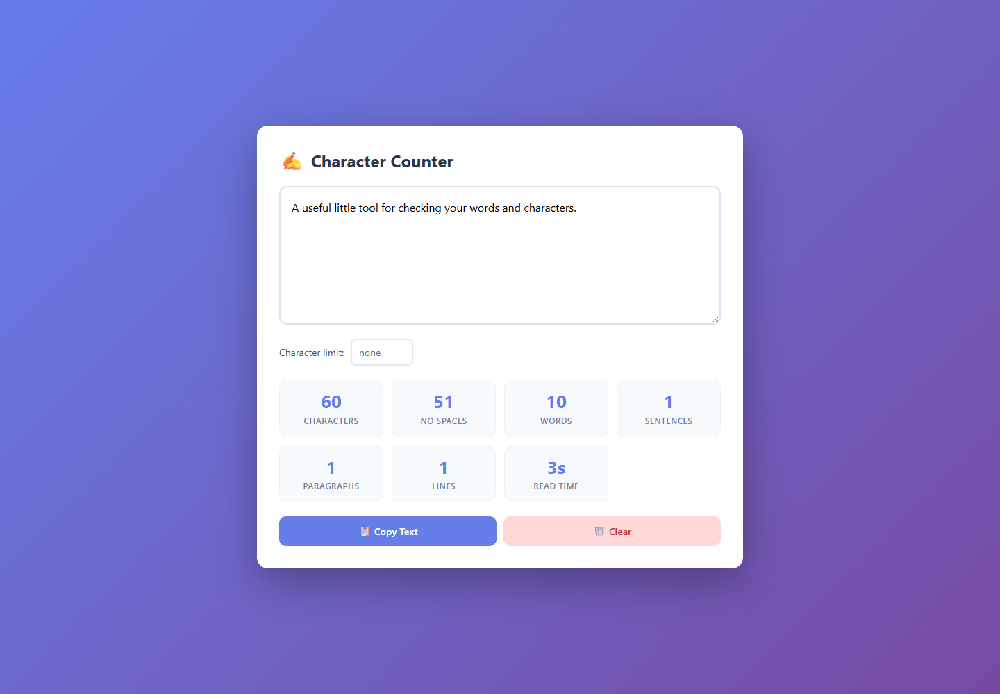
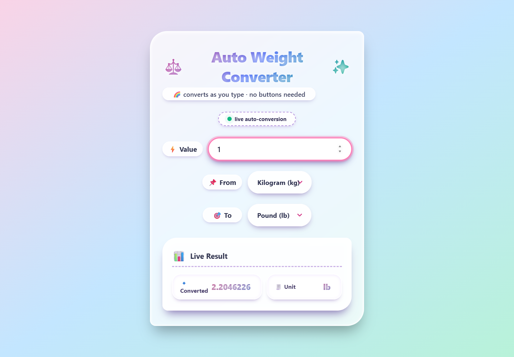
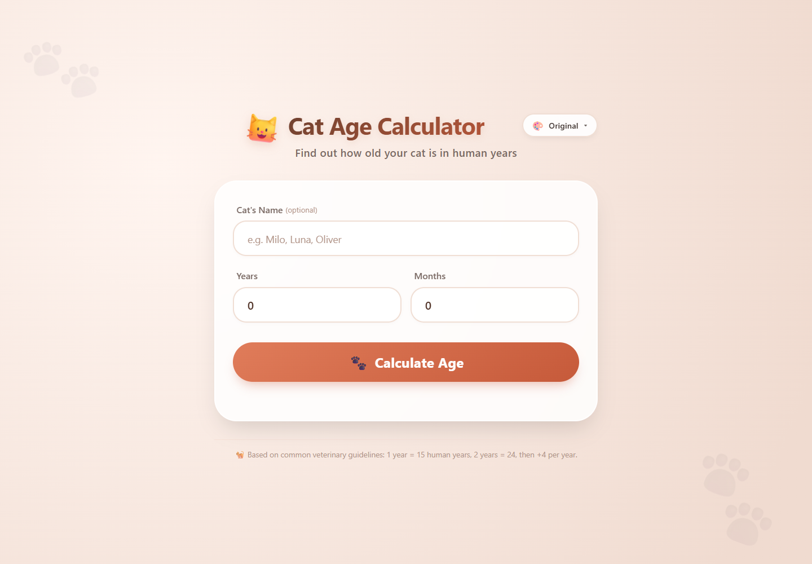
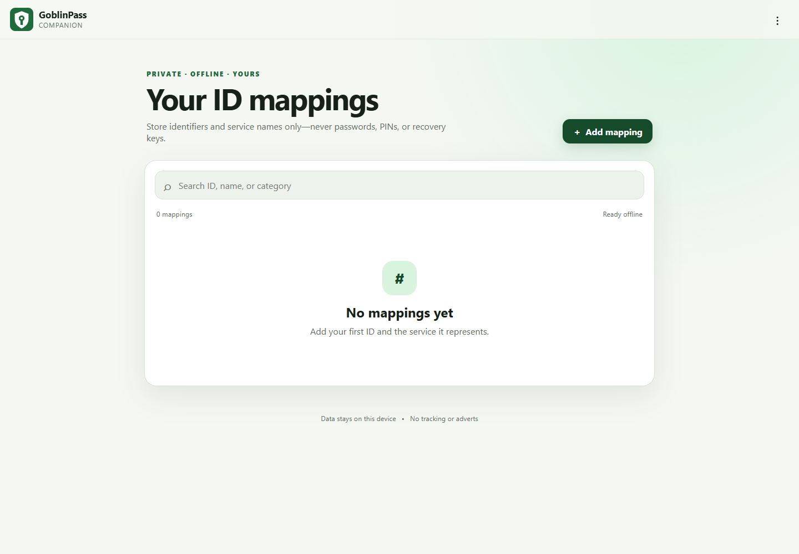

01 / GAME
L4D / Deadwalk
A browser survival game inspired by Left 4 Dead. Explore an infected city, find supplies and fight alongside your team.
Try live demoSmall projects. Plenty to explore.
Games, experiments and useful little tools.
Pick something and jump straight in.

Artwork, products, mockups and marketplace listings — one creative workspace. Still under development and currently used privately.

A browser survival game inspired by Left 4 Dead. Explore an infected city, find supplies and fight alongside your team.
Try live demo
Choose a gallery picture and hide an encrypted message inside it. Create compression-resistant JPGs and decode received pictures with a shared passphrase.
Try live demo
Check the length of your text as you type. A quick companion for drafting posts, messages and other writing with character limits.
Try live demo
Convert between weight units in a colourful, easy-to-use calculator.
Try live demo
Estimate your cat’s age in human years with a simple age calculator.
Try live demo
A private, offline companion for organising ID mappings. Its local interface keeps your personal mappings on your device.
Try live demo